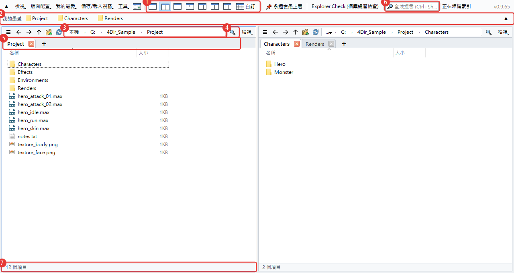
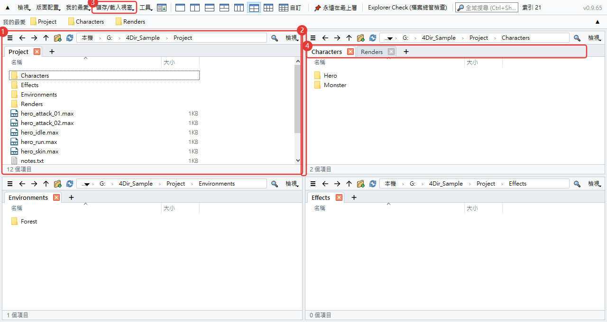
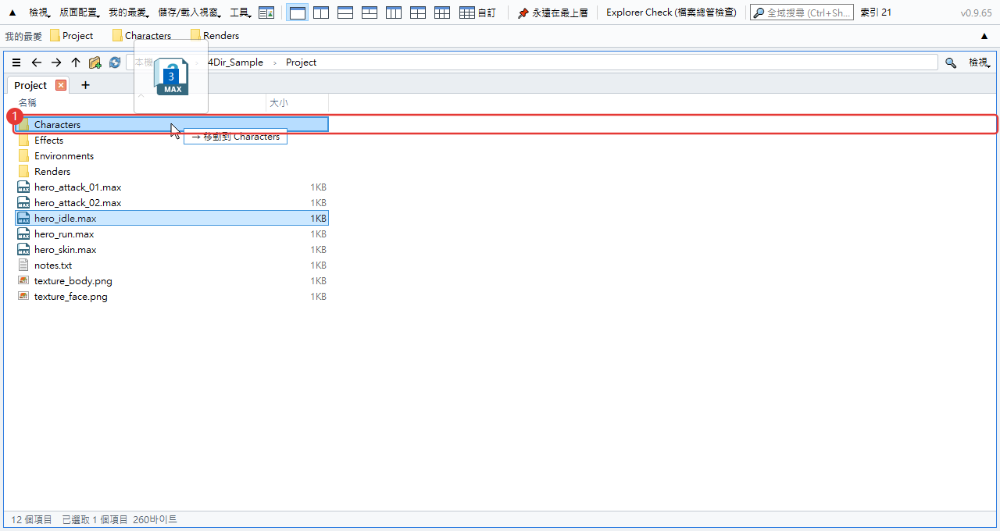
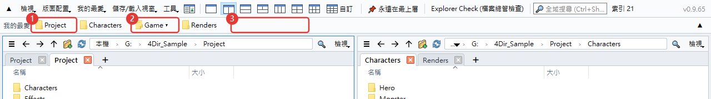
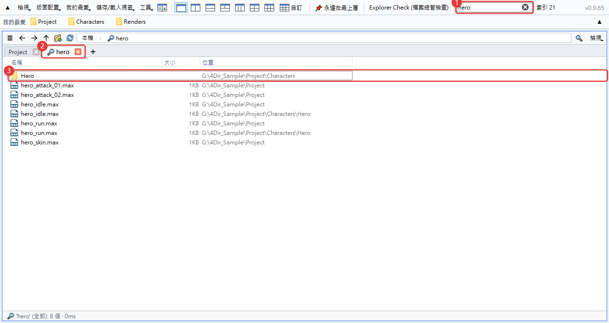
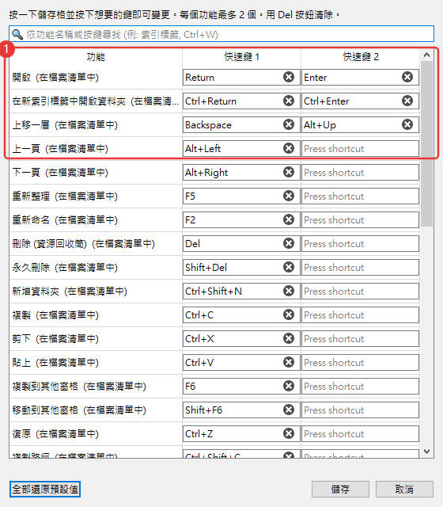
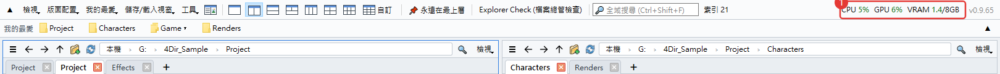
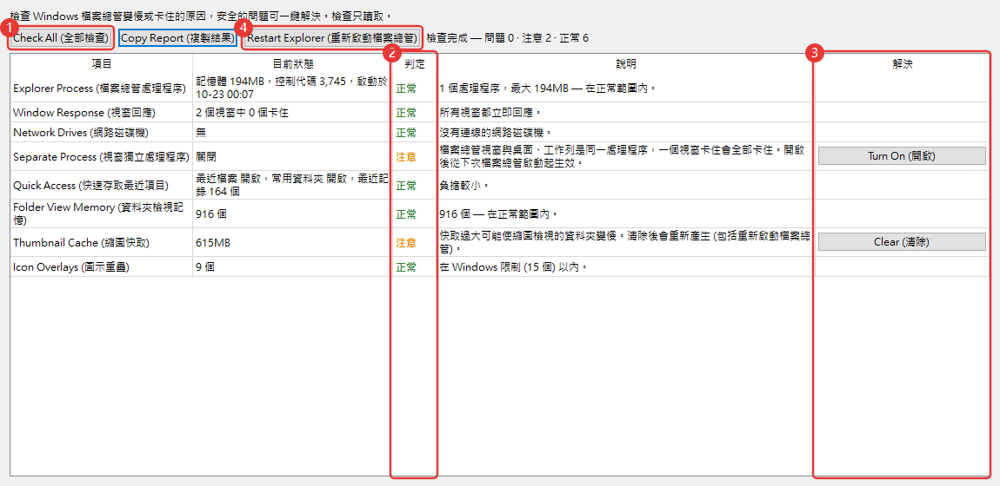

4Dir 使用方法
照著剛開始用時最常碰到的順序寫的。圖中的紅色編號和文字裡的編號對應。快速鍵和 Windows 檔案總管幾乎一樣，用過檔案總管的話，有一半內容您其實已經會了。
畫面一覽
4Dir 可以在一個視窗裡並排開好幾個資料夾。從上往下看是這樣：

- 分格按鈕。1、2、3、4、6 格按一下就好，最後的自訂可以隨意決定欄數和列數（最多 5×4）。
- 我的最愛列。把常去的資料夾拖到這裡就會多一個按鈕。在按鈕上按右鍵可以重新命名或刪除。
- 網址列。點路徑中的某一段，直接跳到那個資料夾。點右邊的空白處，可以改成手動輸入。
- 篩選。在目前的資料夾裡依名稱篩選。Ctrl+F
- 索引標籤。每個窗格有自己的索引標籤。用 + 或 Ctrl+T 開啟，Ctrl+W 關閉。
- 全域搜尋。在整個磁碟機裡依檔名尋找，下面「搜尋」一節會另外說明。
- 狀態列。顯示項目數，以及選取的個數和大小。
窗格和索引標籤
可以把每個窗格當成一個小的檔案總管。每個窗格各自記住自己的索引標籤和資料夾。

- 最後點過的窗格會有藍色外框，快速鍵作用在這個窗格。
- 拖曳窗格之間的分界線可以調整大小。
- 在儲存/載入視窗裡，可以替目前的窗格配置和索引標籤取個名字存起來。每項工作存一個，用起來很方便。
- 索引標籤可以拖曳來調整順序，或移到別的窗格；拖到視窗外面會變成新視窗。按右鍵還可以用 Windows 檔案總管開啟。
關掉 4Dir 再開，上次的窗格配置和索引標籤都會原樣回來。開著 4Dir 重新開機，下次登入時也會再開啟（可以在工具功能表裡關掉）。
移動和複製檔案
和在檔案總管裡的做法一樣。拖曳時，目標資料夾會反白，旁邊還會先顯示「→ 移動到 ○○」這樣的提示，告訴您會發生什麼事。

- 目標資料夾。同一個磁碟機是移動，不同磁碟機是複製。按住 Ctrl 放開是複製，按住 Shift 是移動。
有好幾個窗格時不用拖。選好後按 F6 複製到另一個窗格，Shift+F6 是移動。
弄錯了就按 Ctrl+Z。重新命名、新增資料夾、移動、複製、刪除到資源回收筒，都能一步一步復原。
用 F2 改名時按 ↓，會直接接著改下一個檔案。選取多個檔案再按 F2，會開啟批次重新命名視窗。
右鍵選單用的就是 Windows 本身的選單，壓縮軟體和 TortoiseSVN 的選單也會像在檔案總管裡一樣出現。
在 .webp 圖片上按右鍵 → WebP 轉換 → 另存為 PNG / 另存為 JPG。新檔案會出現在同一資料夾中，原始檔案保留（不需要時請自行刪除）。也可以一次選多個檔案。
我的最愛
把常去的資料夾做成按鈕放在上方那一列。一開始是空的，只會顯示您自己加的（和 Windows 檔案總管的快速存取是分開的）。

- 我的最愛按鈕。按一下就在目前的窗格開啟那個資料夾。按右鍵有在新索引標籤中開啟、重新命名、刪除。把檔案拖到按鈕上，會移動或複製到那個資料夾。
- 群組按鈕（▾）。把好幾個我的最愛收在一個按鈕下。按下去會展開裡面的清單。把資料夾放到群組按鈕正中間，就會加進那個群組。
- 把資料夾拖到空白處或按鈕之間，那個位置就會多一個新按鈕。按鈕之間也可以拖曳調整順序。目前的資料夾按 Ctrl+D 就能直接加入。
要整理的東西多，就開我的最愛 → 整理我的最愛。一次刪除好幾個、調整順序和名稱、建立群組、找出已經不存在的資料夾，都在同一個視窗裡。要按確認才會套用。
按鈕一列放不下時，按列最右邊的 ▼，會展開成多列全部顯示（▲ 恢復成一列）。
想直接用 Windows 檔案總管裡釘選的資料夾，就用我的最愛 → 匯入 Windows 檔案總管快速存取。已經有的會略過。
搜尋
在上方的搜尋框輸入文字，馬上就開始找。第一次啟動時會先把磁碟機裡的檔名清單建好，之後只追蹤有變動的部分，所以很快。

- 搜尋框。輸入多個字詞時，只顯示全部都包含的名稱，也可以用
*.max這樣的星號。Ctrl+Shift+F - 結果會在一個放大鏡索引標籤裡開啟。
- 「位置」欄是檔案所在的資料夾。按兩下開啟，按右鍵 → 開啟檔案位置就會跳到那個資料夾。
要搜哪些磁碟機，在工具 → 搜尋範圍裡選。網路磁碟機預設是關閉的。
清單還沒建好，或資料夾不在範圍內時，可以用篩選框旁邊的箭頭按鈕，直接搜目前資料夾底下的所有內容。
如果您用 SVN
工作資料夾在 SVN 底下的話，檔案和資料夾會帶狀態標記。裝了 TortoiseSVN 的話，用的就是和檔案總管一樣的圖示。

- 綠色勾勾：沒有變更。資料夾會看裡面的全部內容。
- 紅色驚嘆號：已修改。如果是資料夾，代表裡面有還沒認可的變更。
- 藍色加號：預定新增（還沒認可）。
- 灰色問號：不在版本控制內的檔案。
我的最愛列的按鈕上也會有同樣的標記，在上方就能看出哪些資料夾還沒認可。
很大的工作資料夾第一次檢查要幾秒鐘，這段時間狀態列會顯示「正在檢查 SVN」。不需要標記的話，關掉檢視 → 顯示 → 顯示 SVN 狀態就好。
修改快速鍵
在工具 → 快速鍵設定裡替每個功能設定想要的按鍵。一個功能最多可以設兩個按鍵。

- 點一下格子，再按想用的按鍵，馬上就改好了。和其他按鍵重複時會提醒您。
常用的幾個：Ctrl+T 新索引標籤，Ctrl+W 關閉索引標籤，Ctrl+N 新視窗，Ctrl+L 網址列，Ctrl+Shift+C 複製路徑，Alt+Enter 內容。
查看 CPU·GPU 使用率
這個功能是為了在跑 3ds Max 算圖或玩遊戲時看看電腦有多忙。數字會顯示在上方那列的右邊。

- CPU：整台電腦的使用率。GPU：顯示卡使用率。VRAM：顯示卡記憶體已用/總量（GB）。超過 60% 會變橘色，超過 85% 會變紅色。每 1.5 秒更新一次，滑鼠移上去可以看到顯示卡名稱。
GPU 和 VRAM 只在 NVIDIA 顯示卡上顯示。其他顯示卡只會看到 CPU。
不顯示系統記憶體的使用量。需要的話請看工作管理員（Ctrl+Shift+Esc）。
要關掉就按檢視 → 顯示 CPU·GPU 使用率。視窗最小化時會自動停止更新。視窗太窄時會收進功能表列尾端的 » 裡。
檔案總管檢查 (Explorer Check)
Windows 檔案總管老是卡住或變慢時用的工具。從上方那列的 Explorer Check (檔案總管檢查) 或工具功能表開啟。開啟後馬上開始檢查，檢查只會讀取，不會改動任何東西。

- Check All (全部檢查)：重新檢查一次。會看檔案總管記憶體、視窗回應、網路磁碟機、資料夾視窗獨立處理程序、最近使用的項目、資料夾檢視記憶、縮圖快取、覆疊圖示數量、最近強制結束的記錄等。
- 判定。正常 / 注意 / 問題 / 參考。旁邊一欄寫著原因。
- 解決按鈕。只在能修正的項目上出現。按下去會再問一次要改什麼，而且只動目前使用者的設定和使用者資料夾。
- Restart Explorer (重新啟動檔案總管)：檔案總管卡住時關掉再重新開啟。已開啟的檔案總管視窗會被關閉。
用 Copy Report (複製結果) 可以把結果複製成文字。來問問題時一起附上，能更快找到原因。
其他
- 淺色/深色和語言在檢視功能表裡。語言要重新啟動 4Dir 才會切換。
- 4Dir 怪怪的時候，請按工具 → 儲存問題回報記錄，把產生的 zip 寄到 support@4dir.net。我們會看記錄來找原因。